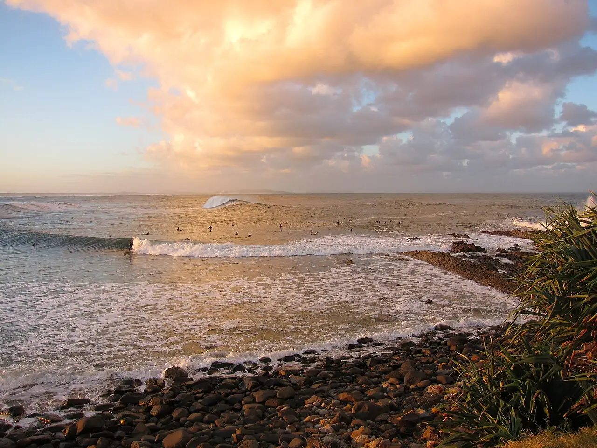

Crescent Head
Nouvelle-Galles du Sud, Australie · surf

Pointbreak de droite qui s’enroule autour du cap, devant le village. Longue, régulière et plutôt douce, la vague est une référence pour le longboard en Australie.
- Lieu
- Nouvelle-Galles du Sud, Australie
- Niveau
- Intermédiaire
- Activités
- surf
- Type d'eau
- Mer / océan
- Coordonnées
- -31.19, 152.98 (position approximative du secteur)
Dangers à connaître
- Rochers et galets le long de la pointe, surtout à marée basse.
- Line-up souvent chargé : collisions possibles.
Le conseil d'Ocean Buddy
Respecte les priorités : la vague est très fréquentée quand ça marche, et les longboardeurs prennent les vagues tôt.
Ouvrir dans Ocean Buddy Télécharger sur l'App Store
Source : Fiche Ocean Buddy · septembre 2026 · à vérifier localement.